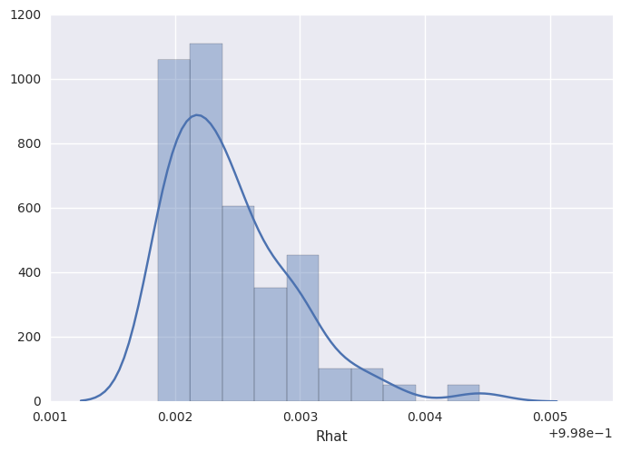
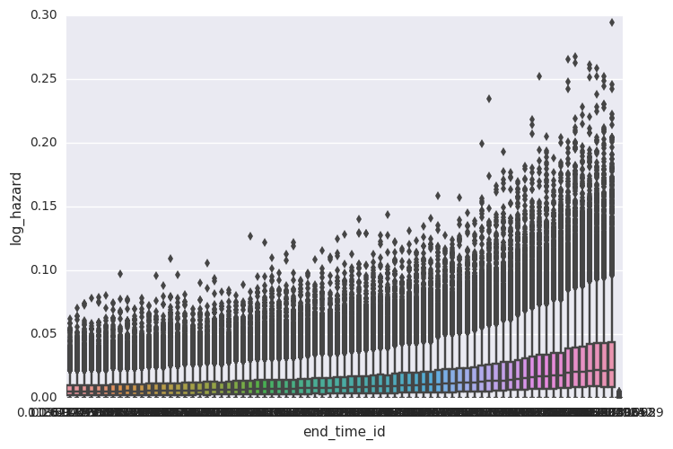
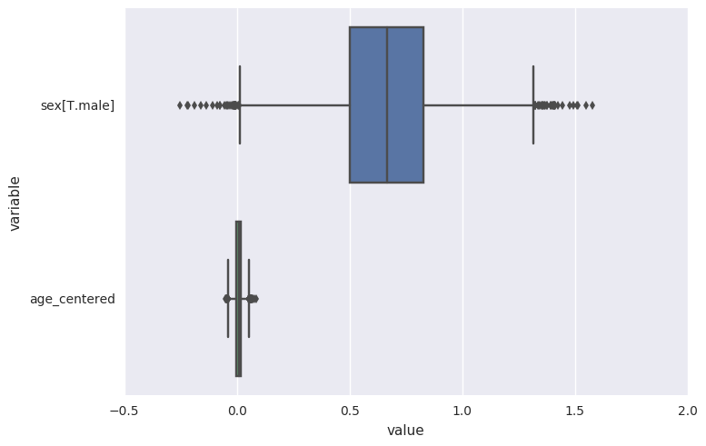
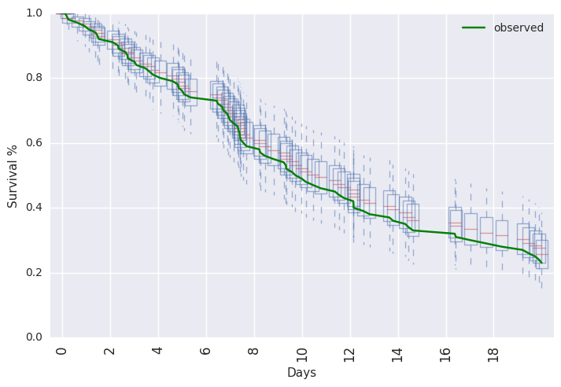
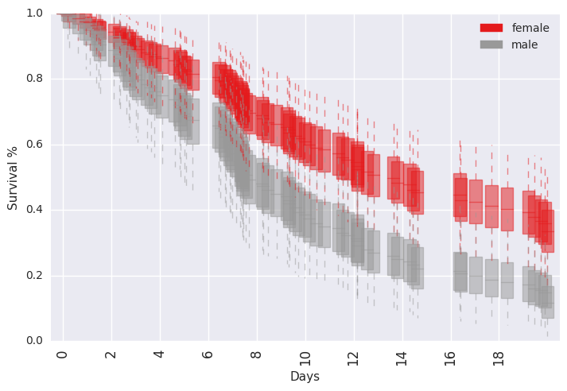
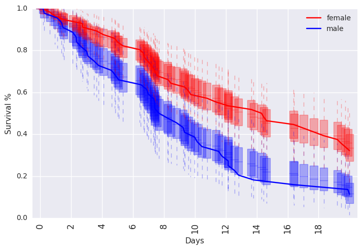

In [1]:
%load_ext autoreload
%autoreload 2
%matplotlib inline
import random
random.seed(1100038344)
import survivalstan
import numpy as np
import pandas as pd
from stancache import stancache
from matplotlib import pyplot as plt
The autoreload extension is already loaded. To reload it, use:
%reload_ext autoreload
/home/jacquelineburos/miniconda3/envs/python3/lib/python3.5/site-packages/Cython/Distutils/old_build_ext.py:30: UserWarning: Cython.Distutils.old_build_ext does not properly handle dependencies and is deprecated.
"Cython.Distutils.old_build_ext does not properly handle dependencies "
/home/jacquelineburos/.local/lib/python3.5/site-packages/IPython/html.py:14: ShimWarning: The `IPython.html` package has been deprecated. You should import from `notebook` instead. `IPython.html.widgets` has moved to `ipywidgets`.
"`IPython.html.widgets` has moved to `ipywidgets`.", ShimWarning)
INFO:stancache.seed:Setting seed to 1245502385
In [2]:
print(survivalstan.models.pem_survival_model_gamma)
/* Variable naming:
// dimensions
N = total number of observations (length of data)
S = number of sample ids
T = max timepoint (number of timepoint ids)
M = number of covariates
// data
s = sample id for each obs
t = timepoint id for each obs
event = integer indicating if there was an event at time t for sample s
x = matrix of real-valued covariates at time t for sample n [N, X]
obs_t = observed end time for interval for timepoint for that obs
*/
// Jacqueline Buros Novik <jackinovik@gmail.com>
data {
int<lower=1> N;
int<lower=1> S;
int<lower=1> T;
int<lower=0> M;
int<lower=1, upper=N> s[N]; // sample id
int<lower=1, upper=T> t[N]; // timepoint id
int<lower=0, upper=1> event[N]; // 1: event, 0:censor
matrix[N, M] x; // explanatory vars
real<lower=0> obs_t[N]; // observed end time for each obs
real<lower=0> t_dur[T];
real<lower=0> t_obs[T];
}
transformed data {
real c_unit;
real r_unit;
int n_trans[S, T];
// scale for baseline hazard params (fixed)
c_unit = 0.001;
r_unit = 0.1;
// n_trans used to map each sample*timepoint to n (used in gen quantities)
// map each patient/timepoint combination to n values
for (n in 1:N) {
n_trans[s[n], t[n]] = n;
}
// fill in missing values with n for max t for that patient
// ie assume "last observed" state applies forward (may be problematic for TVC)
// this allows us to predict failure times >= observed survival times
for (samp in 1:S) {
int last_value;
last_value = 0;
for (tp in 1:T) {
// manual says ints are initialized to neg values
// so <=0 is a shorthand for "unassigned"
if (n_trans[samp, tp] <= 0 && last_value != 0) {
n_trans[samp, tp] = last_value;
} else {
last_value = n_trans[samp, tp];
}
}
}
}
parameters {
vector<lower=0>[T] baseline; // unstructured baseline hazard for each timepoint t
vector[M] beta; // beta for each covariate
real<lower=0> c_raw;
real<lower=0> r_raw;
}
transformed parameters {
vector[N] log_hazard;
vector[T] log_baseline;
real<lower=0> c;
real<lower=0> r;
log_baseline = log(baseline);
r = r_unit*r_raw;
c = c_unit*c_raw;
for (n in 1:N) {
log_hazard[n] = x[n,]*beta + log_baseline[t[n]];
}
}
model {
for (i in 1:T) {
baseline[i] ~ gamma(r * t_dur[i] * c, c);
}
beta ~ cauchy(0, 2);
event ~ poisson_log(log_hazard);
c_raw ~ normal(0, 1);
r_raw ~ normal(0, 1);
}
generated quantities {
real log_lik[N];
int y_hat_mat[S, T]; // ppcheck for each S*T combination
real y_hat_time[S]; // predicted failure time for each sample
int y_hat_event[S]; // predicted event (0:censor, 1:event)
// log-likelihood, for loo
for (n in 1:N) {
log_lik[n] = poisson_log_lpmf(event[n] | log_hazard[n]);
}
// posterior predicted values
for (samp in 1:S) {
int sample_alive;
sample_alive = 1;
for (tp in 1:T) {
if (sample_alive == 1) {
real log_haz;
int n;
int pred_y;
// determine predicted value of y
n = n_trans[samp, tp];
log_haz = x[n,]*beta + log_baseline[tp];
if (log_haz < log(pow(2, 30)))
pred_y = poisson_log_rng(log_haz);
else
pred_y = 9;
// mark this patient as ineligible for future tps
// note: deliberately make 9s ineligible
if (pred_y >= 1) {
sample_alive = 0;
y_hat_time[samp] = t_obs[tp];
y_hat_event[samp] = 1;
}
// save predicted value of y to matrix
y_hat_mat[samp, tp] = pred_y;
}
else if (sample_alive == 0) {
y_hat_mat[samp, tp] = 9;
}
} // end per-timepoint loop
// if patient still alive at max
//
if (sample_alive == 1) {
y_hat_time[samp] = t_obs[T];
y_hat_event[samp] = 0;
}
} // end per-sample loop
}
In [3]:
d = stancache.cached(
survivalstan.sim.sim_data_exp_correlated,
N=100,
censor_time=20,
rate_form='1 + sex',
rate_coefs=[-3, 0.5],
)
d['age_centered'] = d['age'] - d['age'].mean()
d.head()
INFO:stancache.stancache:sim_data_exp_correlated: cache_filename set to sim_data_exp_correlated.cached.N_100.censor_time_20.rate_coefs_54462717316.rate_form_1 + sex.pkl
INFO:stancache.stancache:sim_data_exp_correlated: Loading result from cache
Out[3]:
| age | sex | rate | true_t | t | event | index | age_centered | |
|---|---|---|---|---|---|---|---|---|
| 0 | 59 | male | 0.082085 | 20.948771 | 20.000000 | False | 0 | 4.18 |
| 1 | 58 | male | 0.082085 | 12.827519 | 12.827519 | True | 1 | 3.18 |
| 2 | 61 | female | 0.049787 | 27.018886 | 20.000000 | False | 2 | 6.18 |
| 3 | 57 | female | 0.049787 | 62.220296 | 20.000000 | False | 3 | 2.18 |
| 4 | 55 | male | 0.082085 | 10.462045 | 10.462045 | True | 4 | 0.18 |
In [4]:
survivalstan.utils.plot_observed_survival(df=d[d['sex']=='female'], event_col='event', time_col='t', label='female')
survivalstan.utils.plot_observed_survival(df=d[d['sex']=='male'], event_col='event', time_col='t', label='male')
plt.legend()
Out[4]:
<matplotlib.legend.Legend at 0x7f9fac008eb8>

In [5]:
dlong = stancache.cached(
survivalstan.prep_data_long_surv,
df=d, event_col='event', time_col='t'
)
INFO:stancache.stancache:prep_data_long_surv: cache_filename set to prep_data_long_surv.cached.df_33772694934.event_col_event.time_col_t.pkl
INFO:stancache.stancache:prep_data_long_surv: Loading result from cache
In [6]:
dlong.head()
Out[6]:
| age | sex | rate | true_t | t | event | index | age_centered | key | end_time | end_failure | |
|---|---|---|---|---|---|---|---|---|---|---|---|
| 0 | 59 | male | 0.082085 | 20.948771 | 20.0 | False | 0 | 4.18 | 1 | 20.000000 | False |
| 1 | 59 | male | 0.082085 | 20.948771 | 20.0 | False | 0 | 4.18 | 1 | 12.827519 | False |
| 2 | 59 | male | 0.082085 | 20.948771 | 20.0 | False | 0 | 4.18 | 1 | 10.462045 | False |
| 3 | 59 | male | 0.082085 | 20.948771 | 20.0 | False | 0 | 4.18 | 1 | 0.196923 | False |
| 4 | 59 | male | 0.082085 | 20.948771 | 20.0 | False | 0 | 4.18 | 1 | 9.244121 | False |
In [7]:
testfit = survivalstan.fit_stan_survival_model(
model_cohort = 'test model',
model_code = survivalstan.models.pem_survival_model_gamma,
df = dlong,
sample_col = 'index',
timepoint_end_col = 'end_time',
event_col = 'end_failure',
formula = '~ age_centered + sex',
iter = 5000,
chains = 4,
seed = 9001,
FIT_FUN = stancache.cached_stan_fit,
)
INFO:stancache.stancache:Step 1: Get compiled model code, possibly from cache
INFO:stancache.stancache:StanModel: cache_filename set to anon_model.cython_0_25_1.model_code_72990130769.pystan_2_12_0_0.stanmodel.pkl
INFO:stancache.stancache:StanModel: Loading result from cache
INFO:stancache.stancache:Step 2: Get posterior draws from model, possibly from cache
INFO:stancache.stancache:sampling: cache_filename set to anon_model.cython_0_25_1.model_code_72990130769.pystan_2_12_0_0.stanfit.chains_4.data_64545635565.iter_5000.seed_9001.pkl
INFO:stancache.stancache:sampling: Starting execution
INFO:stancache.stancache:sampling: Execution completed (0:02:26.153391 elapsed)
INFO:stancache.stancache:sampling: Saving results to cache
/home/jacquelineburos/miniconda3/envs/python3/lib/python3.5/site-packages/stancache/stancache.py:251: UserWarning: Pickling fit objects is an experimental feature!
The relevant StanModel instance must be pickled along with this fit object.
When unpickling the StanModel must be unpickled first.
pickle.dump(res, open(cache_filepath, 'wb'), pickle.HIGHEST_PROTOCOL)
/home/jacquelineburos/miniconda3/envs/python3/lib/python3.5/site-packages/stanity/psis.py:228: FutureWarning: elementwise comparison failed; returning scalar instead, but in the future will perform elementwise comparison
elif sort == 'in-place':
/home/jacquelineburos/miniconda3/envs/python3/lib/python3.5/site-packages/stanity/psis.py:246: VisibleDeprecationWarning: using a non-integer number instead of an integer will result in an error in the future
bs /= 3 * x[sort[np.floor(n/4 + 0.5) - 1]]
/home/jacquelineburos/miniconda3/envs/python3/lib/python3.5/site-packages/stanity/psis.py:262: RuntimeWarning: overflow encountered in exp
np.exp(temp, out=temp)
/home/jacquelineburos/miniconda3/envs/python3/lib/python3.5/site-packages/stanity/psis.py:246: RuntimeWarning: divide by zero encountered in true_divide
bs /= 3 * x[sort[np.floor(n/4 + 0.5) - 1]]
/home/jacquelineburos/miniconda3/envs/python3/lib/python3.5/site-packages/stanity/psis.py:250: RuntimeWarning: invalid value encountered in multiply
temp = ks[:,None] * x
/home/jacquelineburos/miniconda3/envs/python3/lib/python3.5/site-packages/stanity/psis.py:267: RuntimeWarning: invalid value encountered in greater_equal
dii = w >= 10 * np.finfo(float).eps
/home/jacquelineburos/miniconda3/envs/python3/lib/python3.5/site-packages/stanity/psis.py:282: RuntimeWarning: invalid value encountered in double_scalars
sigma = -k / b
In [8]:
survivalstan.utils.print_stan_summary([testfit], pars='lp__')
mean se_mean sd 2.5% 50% 97.5% Rhat
lp__ -1034.96497 0.18312 7.354494 -1050.563484 -1034.543604 -1021.53023 1.000819
In [9]:
survivalstan.utils.print_stan_summary([testfit], pars='log_baseline')
mean se_mean sd 2.5% 50% 97.5% Rhat
log_baseline[0] -5.540533 0.026349 1.317162 -8.741271 -5.317482 -3.605955 1.000660
log_baseline[1] -5.540373 0.026410 1.312295 -8.765512 -5.305697 -3.661229 1.000160
log_baseline[2] -5.533987 0.025182 1.277367 -8.563403 -5.341926 -3.613802 1.000899
log_baseline[3] -5.499061 0.023197 1.266738 -8.526801 -5.300919 -3.598318 1.000996
log_baseline[4] -5.529027 0.029142 1.376488 -8.883094 -5.280803 -3.553426 1.001002
log_baseline[5] -5.471047 0.025521 1.260655 -8.429872 -5.272214 -3.596805 1.002028
log_baseline[6] -5.499416 0.034998 1.321609 -8.548750 -5.291451 -3.584369 1.003210
log_baseline[7] -5.464198 0.024734 1.288292 -8.466082 -5.228081 -3.575405 1.000619
log_baseline[8] -5.466310 0.027385 1.284197 -8.583571 -5.262634 -3.536853 1.001117
log_baseline[9] -5.416356 0.024357 1.279819 -8.469762 -5.221550 -3.528211 1.001357
log_baseline[10] -5.440701 0.027773 1.306535 -8.676018 -5.228972 -3.541475 1.001608
log_baseline[11] -5.434051 0.027698 1.305317 -8.664646 -5.225114 -3.512998 0.999949
log_baseline[12] -5.370823 0.028533 1.284318 -8.459077 -5.161179 -3.454565 1.001136
log_baseline[13] -5.393917 0.024404 1.280480 -8.626593 -5.192589 -3.486274 1.000423
log_baseline[14] -5.364330 0.025443 1.273700 -8.327442 -5.166064 -3.490194 1.002779
log_baseline[15] -5.357747 0.025662 1.282847 -8.510490 -5.145634 -3.463617 1.002548
log_baseline[16] -5.378575 0.027974 1.302219 -8.521636 -5.152384 -3.489239 1.003528
log_baseline[17] -5.295181 0.026170 1.249062 -8.246395 -5.115480 -3.442103 1.004022
log_baseline[18] -5.346658 0.027128 1.301594 -8.462238 -5.129009 -3.403453 1.002558
log_baseline[19] -5.293308 0.027616 1.280204 -8.270132 -5.103891 -3.405552 1.000711
log_baseline[20] -5.312085 0.024626 1.318119 -8.478142 -5.086743 -3.394770 1.000745
log_baseline[21] -5.277845 0.026557 1.264723 -8.303782 -5.068627 -3.349496 1.000715
log_baseline[22] -5.306103 0.027747 1.309989 -8.480791 -5.098819 -3.372876 1.002474
log_baseline[23] -5.240126 0.024418 1.274211 -8.374662 -5.031179 -3.368183 1.002631
log_baseline[24] -5.180366 0.023456 1.229393 -8.199401 -4.991827 -3.339248 1.002037
log_baseline[25] -5.220781 0.025189 1.279213 -8.155421 -5.026628 -3.347359 0.999862
log_baseline[26] -5.198388 0.027133 1.293306 -8.334439 -4.988685 -3.310959 1.002848
log_baseline[27] -5.145882 0.024486 1.269478 -8.201074 -4.960108 -3.261169 1.000358
log_baseline[28] -5.112184 0.023308 1.235079 -8.159944 -4.913842 -3.245869 1.001038
log_baseline[29] -5.130311 0.028653 1.303939 -8.381742 -4.914959 -3.271805 1.001287
log_baseline[30] -5.197454 0.026676 1.342558 -8.362530 -4.956216 -3.213312 1.000961
log_baseline[31] -5.188365 0.027795 1.344816 -8.474813 -4.969168 -3.277665 1.002005
log_baseline[32] -5.102617 0.024780 1.260118 -8.178528 -4.901117 -3.213594 1.000780
log_baseline[33] -5.075221 0.024387 1.227845 -7.991722 -4.885576 -3.214388 1.000436
log_baseline[34] -5.110409 0.029528 1.336298 -8.447845 -4.872393 -3.193095 1.001111
log_baseline[35] -5.031990 0.024814 1.248103 -8.051273 -4.841412 -3.165030 1.000698
log_baseline[36] -5.050843 0.025298 1.288200 -8.189802 -4.835042 -3.140867 1.002413
log_baseline[37] -5.027862 0.025181 1.274591 -7.993631 -4.829429 -3.130617 1.002734
log_baseline[38] -5.043253 0.031843 1.332076 -8.392334 -4.800582 -3.117772 1.001792
log_baseline[39] -5.009148 0.027024 1.286125 -8.114673 -4.801411 -3.083061 1.001948
log_baseline[40] -4.977261 0.022727 1.253310 -8.021432 -4.786938 -3.099191 1.000618
log_baseline[41] -4.973488 0.026404 1.297564 -8.165326 -4.762586 -3.063354 1.000620
log_baseline[42] -4.976570 0.026160 1.289808 -8.134780 -4.785349 -3.061472 1.000685
log_baseline[43] -4.919019 0.025599 1.277389 -8.050034 -4.700221 -3.016657 1.001715
log_baseline[44] -4.900334 0.025927 1.293227 -8.049396 -4.679596 -2.980225 1.000656
log_baseline[45] -4.907134 0.025745 1.276647 -8.046290 -4.690973 -3.021486 1.001499
log_baseline[46] -4.855415 0.023345 1.255215 -7.826891 -4.654950 -2.972896 1.001151
log_baseline[47] -4.832234 0.021958 1.254851 -7.809152 -4.639160 -2.926565 1.001058
log_baseline[48] -4.798222 0.024395 1.255120 -7.870438 -4.580276 -2.924569 1.000580
log_baseline[49] -4.838834 0.029046 1.346472 -8.135627 -4.612250 -2.866454 1.001520
log_baseline[50] -4.760367 0.024182 1.265330 -7.845615 -4.552539 -2.875869 1.000354
log_baseline[51] -4.737922 0.024380 1.249825 -7.791359 -4.524863 -2.860117 1.000065
log_baseline[52] -4.751358 0.028862 1.327670 -8.044268 -4.540209 -2.862803 1.000918
log_baseline[53] -4.685420 0.023722 1.284065 -7.852333 -4.469523 -2.795754 1.001032
log_baseline[54] -4.695464 0.025316 1.294588 -7.810316 -4.503222 -2.782197 1.000505
log_baseline[55] -4.662545 0.027774 1.317164 -7.848580 -4.440736 -2.771303 1.000641
log_baseline[56] -4.669330 0.030262 1.321870 -7.914412 -4.434960 -2.743924 1.000618
log_baseline[57] -4.620962 0.025575 1.282324 -7.585949 -4.400851 -2.737336 1.003473
log_baseline[58] -4.564812 0.025214 1.287904 -7.671804 -4.338766 -2.704413 1.001306
log_baseline[59] -4.562128 0.030414 1.350609 -7.910983 -4.324704 -2.648129 1.000886
log_baseline[60] -4.542367 0.032122 1.338757 -7.768437 -4.320009 -2.624694 1.002409
log_baseline[61] -4.480764 0.025349 1.287803 -7.550987 -4.280852 -2.593134 1.001754
log_baseline[62] -4.430831 0.024307 1.228657 -7.382741 -4.239083 -2.589439 1.001206
log_baseline[63] -4.395725 0.023673 1.273268 -7.384986 -4.209973 -2.479231 1.000442
log_baseline[64] -4.346682 0.025621 1.266635 -7.426116 -4.141308 -2.442702 1.002046
log_baseline[65] -4.312951 0.024879 1.298957 -7.481565 -4.094432 -2.411871 1.001782
log_baseline[66] -4.272058 0.023535 1.271993 -7.300271 -4.066569 -2.414926 1.001380
log_baseline[67] -4.278248 0.024941 1.301696 -7.406780 -4.063855 -2.381025 1.001246
log_baseline[68] -4.239232 0.022731 1.255980 -7.282352 -4.042431 -2.363243 1.000641
log_baseline[69] -4.220383 0.023864 1.257355 -7.227408 -4.033891 -2.300163 1.000607
log_baseline[70] -4.174461 0.033438 1.387179 -7.389505 -3.925402 -2.265936 1.002038
log_baseline[71] -4.090127 0.022568 1.252697 -7.085192 -3.892866 -2.207512 1.002348
log_baseline[72] -4.110447 0.027878 1.315899 -7.399702 -3.860361 -2.205056 1.001732
log_baseline[73] -4.056023 0.027877 1.311094 -7.247058 -3.837001 -2.137026 1.001115
log_baseline[74] -4.023769 0.024615 1.255600 -7.067530 -3.820071 -2.142365 1.001948
log_baseline[75] -4.049963 0.026498 1.295967 -7.201009 -3.854413 -2.140042 1.000684
log_baseline[76] -4.047071 0.028314 1.357597 -7.297987 -3.803428 -2.082792 1.001065
log_baseline[77] -322.669893 5.131864 200.339993 -685.976286 -304.462026 -18.223910 1.002720
In [10]:
survivalstan.utils.plot_stan_summary([testfit], pars='baseline')
INFO:survivalstan.utils:Warning - 1 rows removed due to NaN values for Rhat. This may indicate a problem in your model estimation.

In [11]:
survivalstan.utils.plot_coefs([testfit], element='baseline')

In [12]:
survivalstan.utils.plot_coefs([testfit])

In [13]:
survivalstan.utils.plot_pp_survival([testfit], fill=False)
survivalstan.utils.plot_observed_survival(df=d, event_col='event', time_col='t', color='green', label='observed')
plt.legend()
Out[13]:
<matplotlib.legend.Legend at 0x7f9ec3bcba20>

In [14]:
survivalstan.utils.plot_pp_survival([testfit], by='sex')

In [15]:
ppsurv = survivalstan.utils.prep_pp_survival_data([testfit], by='sex')
In [16]:
subplot = plt.subplots(1, 1)
survivalstan.utils._plot_pp_survival_data(ppsurv.query('sex == "male"').copy(),
subplot=subplot, color='blue', alpha=0.3)
survivalstan.utils._plot_pp_survival_data(ppsurv.query('sex == "female"').copy(),
subplot=subplot, color='red', alpha=0.3)
survivalstan.utils.plot_observed_survival(df=d[d['sex']=='female'], event_col='event', time_col='t',
color='red', label='female')
survivalstan.utils.plot_observed_survival(df=d[d['sex']=='male'], event_col='event', time_col='t',
color='blue', label='male')
plt.legend()
Out[16]:
<matplotlib.legend.Legend at 0x7f9f9714d7f0>

In [17]: